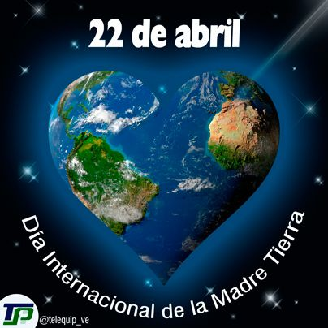
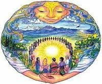
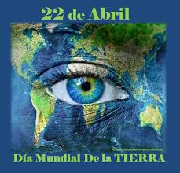
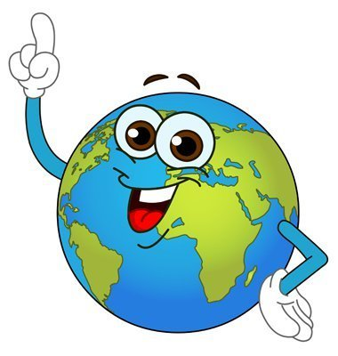

Dia Internacional de la madre Tierra 22 de abril
- 


- 
- 


- 
Realizado por:
Dylan Bautista Garcia
4"G"
Especialidad:
Programación
Submódulo
Desarrolla Aplicaciones Móviles
Docente:
Lic.José Antonio Gómez Hernandez
Dia de la madre Tierra
Dylan Bautista Garcia
Porqué se celebra?
Celebramos el Día Internacional de la Madre Tierra para recordar que el planeta y sus ecosistemas nos dan la vida y el sustento.Con este día, asuimimos, además, la responsabilidad colectiva, como nos recordaba la Declaracion de Río de 1992, fomentar esta armonía con la naturaleza y la Madre Tierra. Este día nos brinda también la oportunidad de concienticiar a todos los habitantes del planeta tierra acerca de los problemas que adfectan a la tierra y a las formas de vida que en él se dasarrollan
Dylan Bautista Garcia
Historia del día
Madre Tierra
"Madre Tierra" es una expresión común utilizada para referirse al planeta Tierra en diversos países y regiones, lo que demuestra la interdependencia existente entre los seres humanos, las demás especies vivas y el planeta que todos habitamos.
La Tierra y sus ecosistemas son nuestro hogar. Para alcanzar un justo equilibrio entre las necesidades económicas, sociales y ambientales de las generaciones presentes y futuras, es necesario promover la armonía con la naturaleza y el planeta.
Celebramos el Día Internacional de la Madre Tierra para recordar que el planeta y sus ecosistemas nos dan la vida y el sustento. Con este día, asumimos, además, la responsabilidad colectiva, como nos recordaba la Declaración de Río de 1992, de fomentar esta armonía con la naturaleza y la Madre Tierra.
Este día nos brinda también la oportunidad de concienciar a todos los habitantes del planeta acerca de los problemas que afectan a la Tierra y a las diferentes formas de vida que en él se desarrollan.
Dylan Bautista Garcia
La Tierra que habitamos
Esta tierra que habitamos
Volvieron a ver su tierra después de muchos años en el exilio. La curva del camino, ya reconocida hace tiempo, les indicó que estaban cerca de la parcela en donde alguna vez fueron felices. Manuel acarició la cabeza su hijo mientras miraba los ojos melancólicos de Martha, tratando de contagiarle esa esperanza que hoy sin embargo se dibujaba solo como una promesa. Caminaban lentamente como buscando desandar los pasos que la violencia les había obligado a dar abandonando todo lo que poseían.
Hacía ya un año que la guerra había terminado. La paz se firmó entre los aplausos de unos y la indiferencia y el escepticismo de otros. El perdón y el olvido se impusieron por decreto. Se habló mucho de víctimas y de reparación. Miles de hombres y mujeres colmaron las oficinas del gobierno buscando que el Estado les reconociera sus muertos y les devolvieran la tierra que hacía mucho tiempo los poderosos les habían arrebatad.
- Desde aquí ya queda poco para el rancho. Lo primero será acomodar la cerca, yo me acuerdo que antes se nos metían mucho los animales del compadre José y nos dañaban las matas.
Dylan Bautista Garcia
Dialogo sobre armonia con la naturaleza
Dialogo sobre Armonía con la Naturaleza en las Naciones Unidas
El 23 de abril de 2018 se realizó en la sede de las Naciones Unidas en Nueva York, el 8° Diálogo Interactivo sobre Armonía con la Naturaleza, en ocasión de la conmemoración del Día Internacional de la Madre Tierra.
El evento fue convenido por el Presidente de la Asamblea General, Miroslav Lajcak, quien destacó la importancia del Diálogo para intercambiar ideas sobre desarrollo y patrones de producción y consumo sostenibles en armonía con la naturaleza.
Dylan Bautista Garcia
Hacia una tierra sostenible
Propuestas para una Tierra Sostenible
El paquete de medidas estratégicas diseñado por el quinteto de organizaciones ecologistas está compuesto por 17 demandas que abarcan medidas transversales que trascienden el medioambiente y van más allá con el fin de facilitar la transformación de todo el sistema.
En concreto, tal y como anunciaron los responsables de estas ONG durante la presentación de Un programa por la Tierra. Demandas para una legislatura sostenible, lo que defienden con estas 17 propuestas es lograr que la «sostenibilidad del modelo económico, las políticas centradas en la justicia social y ambiental y las medidas para generar un nuevo modelo de producción y consumo, con generación de empleo ligado al cuidado y mejora ambiental» marquen el camino en la nueva etapa política.
De forma resumida, estas son las 17 demandas:
- 1.ª Crear una Vicepresidencia de Sostenibilidad y Ministerio de Medio Ambiente.
- 2.ª Reforzar la Fiscalía Coordinadora de Medio Ambiente y Urbanismo y dotarla de más medios.
- 3.ª Reconocer y reforzar el papel de las organizaciones ambientales.
- 4.ª Establecer una Ley de Fiscalidad Ambiental que redistribuya la carga fiscal primando las buenas prácticas que promuevan el ahorro, la restauración ambiental y la creación de empleo ligado al medio ambiente.
- 5.ª Poner en marcha un plan ambicioso de mejora de la calidad del aire de ámbito estatal.
- 6.ª Prohibir de manera urgente el Bisfenol-A y otros disruptores endocrinos.
- 7.ª Prohibir el uso y abuso de animales con fines lúdicos o publicitarios a través de una Ley de Protección Animal.
- 8.ª Aprobar una Ley de Cambio Climático.
De click en "Ver más" para ver más propuestas...